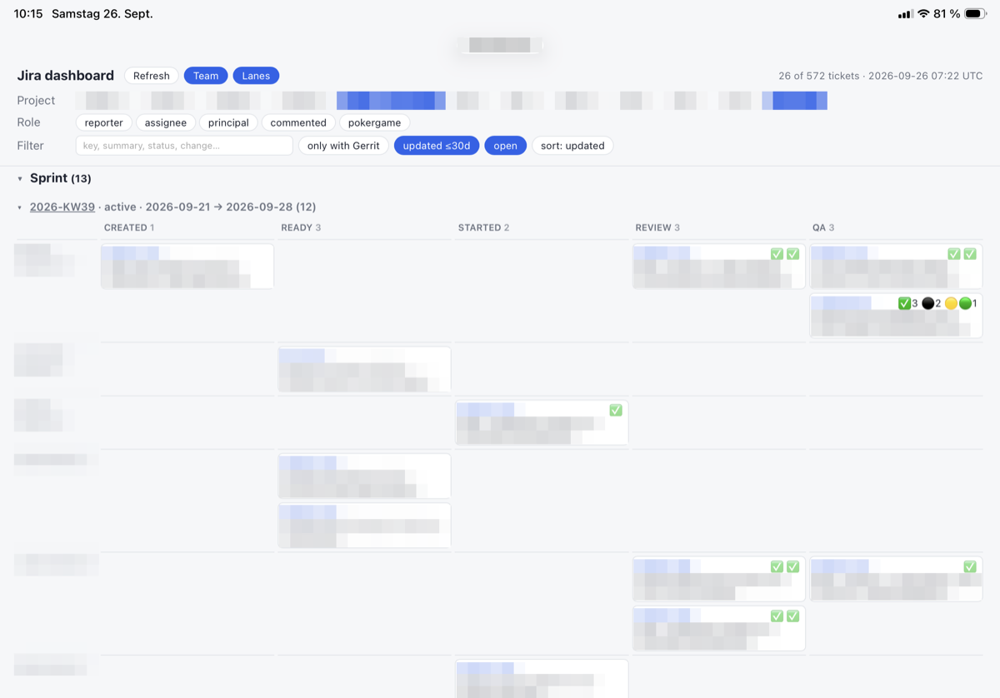

Dashboard for One
When AI 10x's your work, it 10x's your tickets too. The tracker I had didn't show them the way I work anymore. I could keep my work in two places, or write myself a different view.
My tabs are my to-do list
Most of my tickets aren't typed by me anymore. I describe a crash or a bug, and an AI writes it up in Jira, the ticket tracker we use at work. Then it links the code. A small job I set up earlier writes a link into every ticket for each code change that belongs to it, over in Gerrit, our code review tool.
So there were more tickets than ever, and they were scattered. Jira could separately show tickets I'd reported, tickets assigned to me, work I owned while someone else did it, and tickets where I'd only left a comment. It had no view that gathered them all.
My second place was the browser. A ticket I still had to do something with stayed open in a tab, and the open tab was the reminder.
I first tried an AI connector for Jira. It doesn't have access to all the information. So one Saturday morning I asked Claude to skip it and talk to Jira directly with my own key.
Everything basically clickable
My brief was one long dictated paragraph: every ticket I'm involved in, filtered by project, one section for what's planned this week and one for the pile of later, and "everything basically clickable and linkable". A tap on a ticket opens it in Jira. A tap on a code change opens it in Gerrit.
I wanted it on my iPad, not my desk.
The first version showed everything. Every ticket I'd ever touched, hundreds of them. The project picker listed projects nobody had worked on in years.
Every look exposed one more thing to change. Hide dormant projects. Hide tickets untouched for a month. Hide finished work. Add a Refresh button so closed tickets disappear. Move tickets finished in earlier weeks out of the pile of later work. Each fix took one sentence from me and one reload on the iPad.
Today the default view shows a few dozen.
Now it's orthogonal
Then I wanted to see other people's tickets, but not another endless list.
Claude checked the numbers first. My own pile was already too much; this week's company-wide plan was small enough to fit. We added a Team switch for everyone's work planned this week and next, plus every ticket created this week. On a Friday I can see what's coming up next week for everyone, and which tickets nobody has picked up yet.
I had pictured Team as one more choice beside "reported", "assigned" and "commented". Instead, it sat apart from them. I tried Team, then chose a project, and landed exactly where I wanted. My words at the time: "it's so much better than the idea I had of adding it next to the report comment and so on, because now it's orthogonal."
Orthogonal means independent. Each control does one job, so any combination makes sense.
Optimized for the whole team
Next I arranged the tickets like sticky notes on a wall: one row per person, with columns for newly created, ready, started, being checked, being tested, and released. With Team on, I could see what everyone was working on at a glance.

Not a mockup. That's my real screen that morning, with names and tickets pixelated for privacy. Anyone can make a mockup.The first version wouldn't stay lined up. One person's row had two steps and the next had six, so every row jumped sideways. We gave the whole page one fixed set of columns, leaving blank spaces where a person had no ticket. I tapped through it and said: "This is awesome, exactly what I want."
Then I tried it for real. Team, fold away this week's plan, and I'm reading what everyone created this week. Three taps. Before, that would have been a custom filter I'd have to build and maintain. My reaction: "so few clicks needed to get interesting information."
Optimized for one
With the whole team on one board, I wanted all of it on one screen. Every column on the iPad at once, without scrolling sideways. We narrowed them a little at a time until the whole board fit my screen. As I said at the time: "I'm optimizing now for exactly my case, but that's what you can do if you write it yourself or have Claude write it."
It lives on my couch page now, the one I set up two weeks earlier for starting everything my Mac runs. One tap starts it with fresh data, one tap stops it, and I read it on the iPad. I don't have to touch the computer until Monday.
Same procedure as every Monday
Every Monday we sit down for planning poker. Everyone estimates the same ticket at once, cards face down, then we compare. The tickets waiting for it carry a label, Pokergame. Most had no one assigned, so my dashboard had never shown them.
One more button: Pokergame, next to the others.
Then I tapped Refresh, and my selection was gone. That wouldn't survive the meeting. After each estimate, the label comes off the ticket, and I refresh to watch the list shrink. Every refresh would drop me back to the default view.
Now every choice is saved in the page's address, after the #. Refresh opens the same view again. A bookmark can hold a view, too, so "Monday poker" is one tap away.
Tabs I can close
I built all of this in one morning, from the couch, on my iPad.
Somewhere on my Mac, the tabs are still open. Each one a ticket I didn't want to forget. Every ticket is now three taps away.
Now I can finally close them.